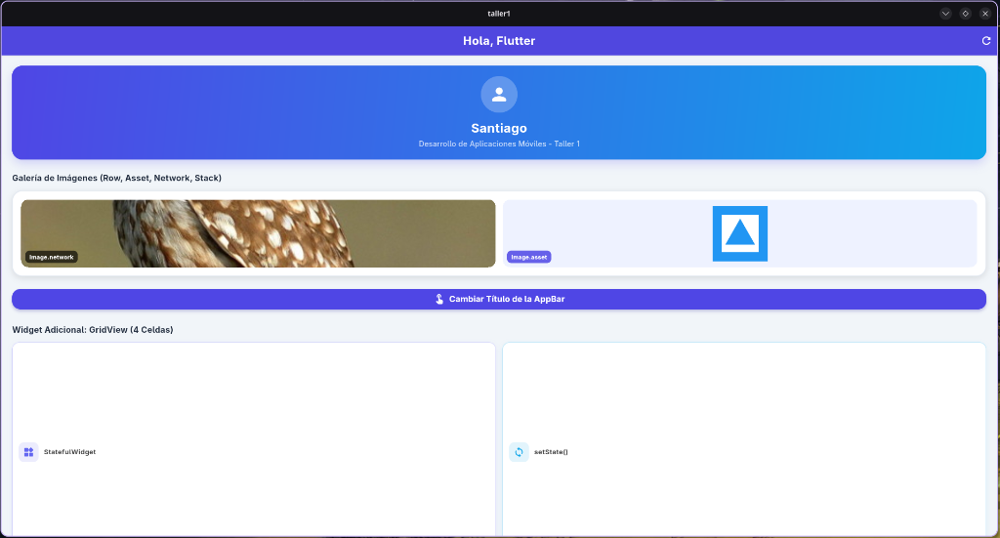
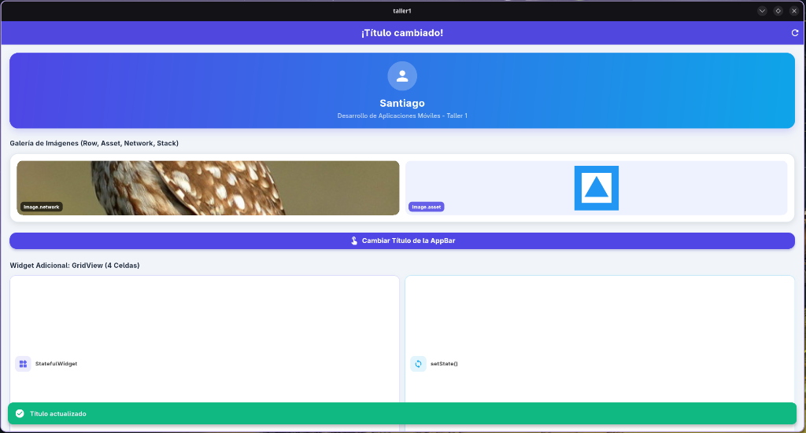
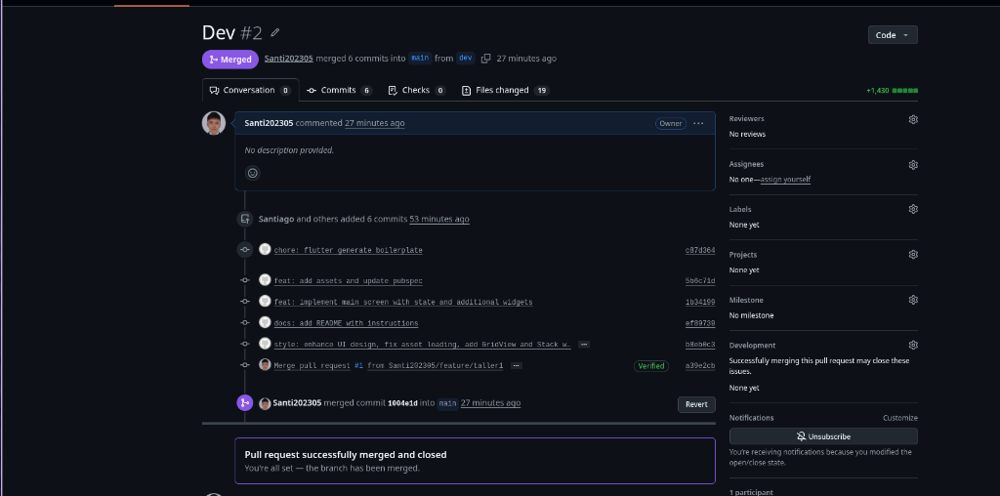
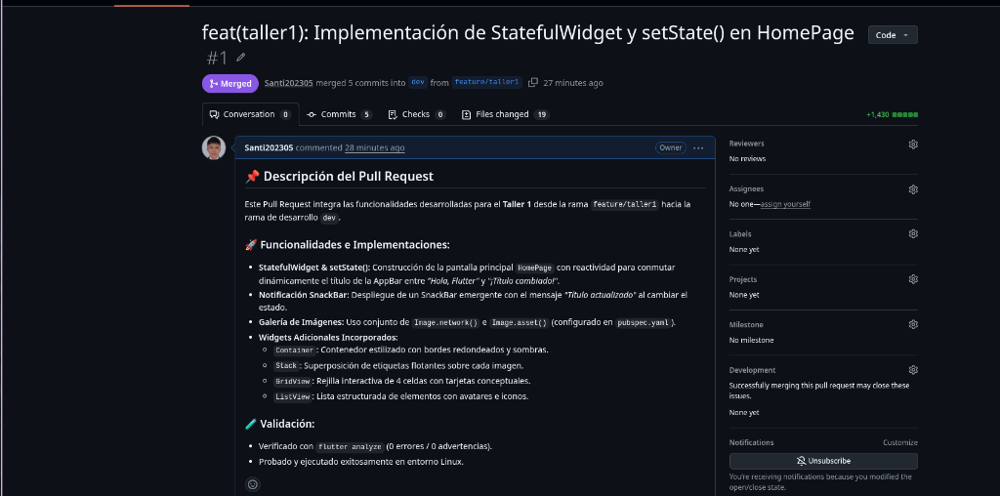

Asignatura: Desarrollo de Aplicaciones Móviles
Estudiante: Santiago
Código de Estudiante: [Tu Código de Estudiante]
Tema: Construcción de Pantalla Básica con StatefulWidget, setState() y Control de Versiones Git
Repositorio GitHub: https://github.com/Santi202305/Flutter.git
Rama del Taller: feature/taller1
Construir una pantalla básica en Flutter implementando la arquitectura de un StatefulWidget para evidenciar el manejo de estado reactivo mediante setState(). Asimismo, aplicar las buenas prácticas de control de versiones Git utilizando un repositorio único con las ramas main, dev y feature/taller1, integrando los cambios mediante Pull Requests.
En Flutter, un StatefulWidget es un widget cuyos datos son mutables en tiempo de ejecución. La arquitectura se divide en dos clases principales:
build().El método setState() le indica al framework que el estado interno ha sido modificado. Esto marca el widget como "dirty" (sucio), obligando a Flutter a ejecutar de nuevo el método build() para actualizar únicamente los elementos visuales modificados de forma reactiva y eficiente.


Se realizó la gestión de ramas respetando el flujo exigido:
1. Creación de rama feature/taller1 desde dev. 2. Commits atómicos e incrementales. 3. Push de ramas main, dev y feature/taller1 hacia GitHub. 4. Creación y aprobación de Pull Request (feature/taller1 ➔ dev). 5. Creación y aprobación de Pull Request (dev ➔ main).


Se cumplió con la totalidad de los requerimientos técnicos de Flutter y de control de versiones Git, logrando una aplicación móvil reactiva, limpia y profesional.